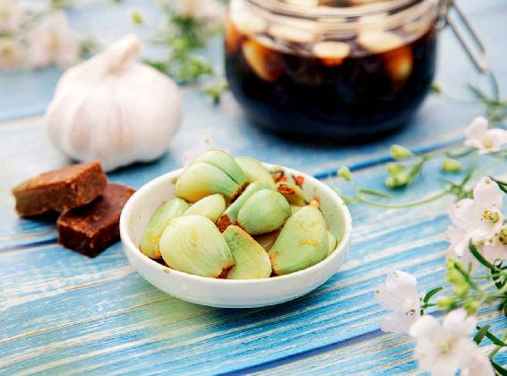
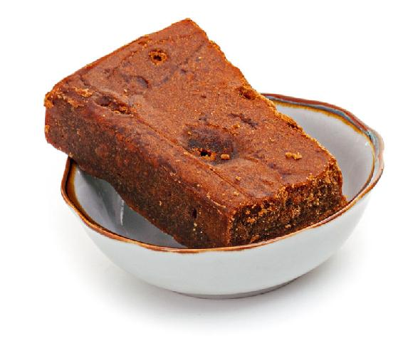
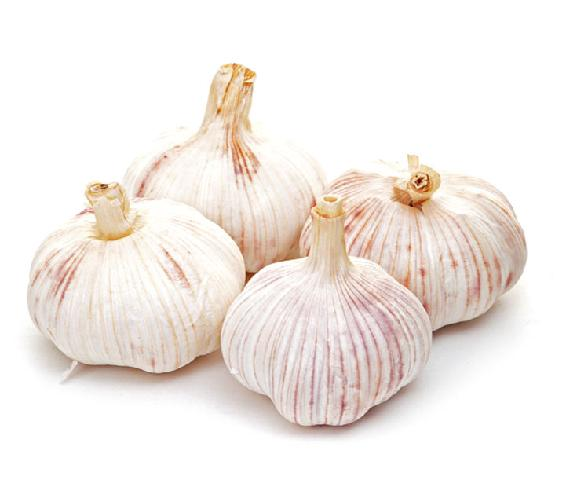
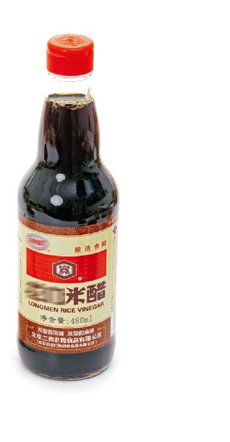
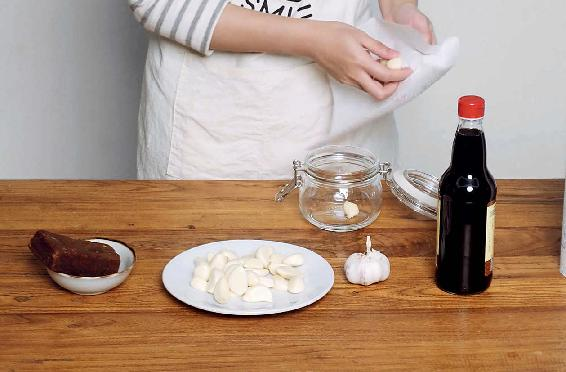
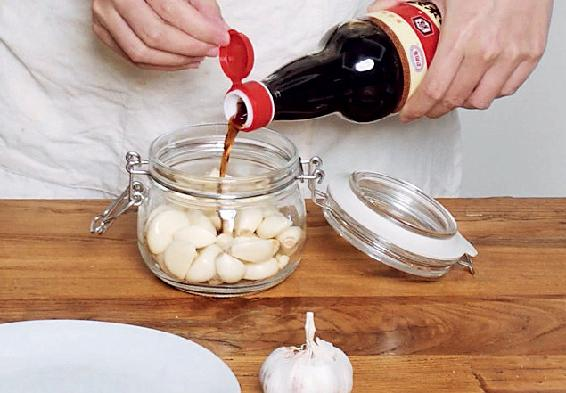
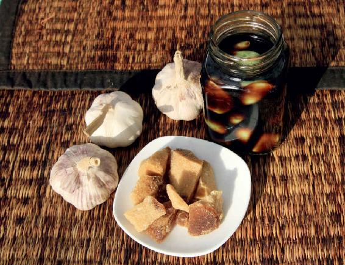

众所周知，大蒜是一种非常好的食物，只是因为吃了以后口腔有一点气味，加上大蒜本身有点辣，吃起来有点烧心，有些朋友就对它敬而远之，这是非常可惜的。
腊八节前后泡腊八蒜，泡好的腊八蒜能够减弱生蒜的热性，使它不那么辣，不那么刺激。
大蒜能消炎、抗癌、杀菌，对我们的肺和肠道也有很好的清洁作用。现在的空气、水源、食物都受到了不同程度的污染，吃点大蒜能帮身体排毒，还能抗癌、抗衰老。
我父亲的身体在全家人当中是最好的，他80岁了，看起来要比同龄人年轻很多，走路也非常快，年轻人都跟不上他的步伐节奏，各种常见的老年病跟他基本绝缘。
他的养生方法也非常简单，就是早姜晚蒜。他坚持了几十年，早上吃一点姜，晚上吃一点蒜。
如果您也想年过七十后还健步如飞，那就坚持早姜晚蒜，嫌大蒜辣的话，可以吃腊八蒜。腊八蒜吃起来非常可口，您可以随时随地捞出来吃。
其实，腊八蒜在什么时候都可以泡，不一定非得在腊八节这一天。但是，腊月初八前后这段时间泡腊八蒜，有一个特别的好处：到过年时，蒜正好泡熟，除夕的晚上，您可以就着腊八蒜吃饺子，这是很舒服的，既开胃又消食。
泡腊八蒜有一些讲究，它跟北方人常吃的糖蒜还是有一点点区别的。以前，泡腊八蒜讲究用紫皮蒜，因为紫皮蒜味道比较脆辣，泡出来口感很好。
现在紫皮蒜卖得比较少了，那您用普通的蒜也可以。
米醋是用米酿造的醋，是能入药的，如果您买不到米醋，普通粮食酿造的醋也是可以的。
记住，不要买那种勾兑的醋，特别是白醋，现在的白醋很多都是用醋精勾兑出来的。
您也可以用陈醋来泡，只是陈醋泡出来的蒜的颜色会有一点点发黄，而用米醋泡出来的蒜，颜色会比较好看。
红糖的选择很关键，不要选赤砂糖，因为赤砂糖不是红糖。赤砂糖是制糖过程中，经过多次脱色之后的红色糖渣，用它来制作腊八蒜，可能会含有一些化学添加剂的残留，而且赤砂糖也不具备红糖的营养。
采用传统方法熬制出来的红糖，会含有甘蔗的营养素，这样泡出来的腊八蒜口感更加脆硬一些，会更好吃，不会变软。
有些朋友问，家里没有红糖，用冰糖行不行呢？也是可以的，只是它没有红糖的味道、营养好。因为红糖含有很多的矿物质，而冰糖和白糖的成分只是蔗糖。

腊八蒜



原料：大蒜、米醋、红糖（少许）。
做法：
1.大蒜剥去皮，用软布擦干净，记住，这个过程中不要沾水和油。

2.把剥好的大蒜放入一个干净的广口玻璃瓶里，装到大约2/3的高度就可以了。

3.倒入米醋，按自己的口味加入少许的红糖，盖好盖子，放置在阴凉处就可以了（不需要放冰箱）。

4.泡上20天左右，等蒜瓣都变成了碧绿色，就可以取出来吃了。
允斌叮嘱：
1.泡好的腊八蒜是能放很久的，可以随吃随取。剩下的蒜就让它继续泡在里面，可以泡上一年半载。
2.泡过蒜的醋也非常香，您可以用作伴餐的调味汁，或者蘸着吃饺子。
3.腊八蒜里的红糖不用放很多。放红糖主要是为了促进发酵，使泡出来的蒜口感更醇厚，而不是要使蒜带有明显的甜味，这跟在做泡菜时，往坛子里放红糖的作用是一样的。
很多朋友不知道泡过的蒜为什么会变绿，有的年轻朋友还以为蒜泡坏了。其实，泡过的蒜变绿是好事儿，这是因为产生了蒜绿素。蒜绿素能提高蒜抗氧化的功效，还能排毒、抗衰老，比生蒜更有好处。
腊八蒜还有一个好处，就是它中和了蒜的热性。很多人不敢吃辣的东西，以为吃了会长痘痘，其实吃辣椒是不会长痘痘的，让我们长痘痘的辛辣之物是大蒜。
因为大蒜的热性是走皮肤的，如果您的皮肤有急性的炎症，或者正在长青春痘，最好不要吃生蒜。
生蒜吃多了还有三个问题：一是易引起胃热；二是伤眼睛；三是容易胃热。所以内热重的人不要多吃生蒜，腊八蒜倒是可以吃一点。
读者评论：用生抽泡了再吃，口感大大地好
青宁 ：泡好的腊八蒜太酸，切片，用生抽泡了再吃，口感大大地好。
人有精气神：大爱陈老师！去年泡的腊八蒜，碧绿碧绿的，太漂亮了，同时吃起来也很香。
允斌解惑：孕妇可以吃腊八蒜吗？
FF健康频道：请问泡了一年的腊八蒜还可以吃吗？（去年泡好了放冰箱里，一直没吃）
允斌：可以吃。
智琳：陈老师，我按照您说的泡的腊八蒜，蒜的颜色一直是白色，泡多久都是白色，是什么原因呢？
允斌：可能是醋或者红糖的问题。
灵昕：老师您好，泡腊八蒜的醋是用黑醋吗？
允斌：用米醋更好看。
厉若忆彩绘：孕妇可以吃腊八蒜吗？
允斌：可以吃，不过孕晚期要少吃。